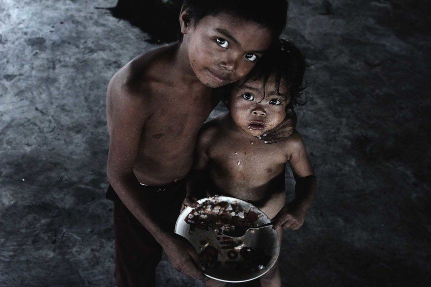
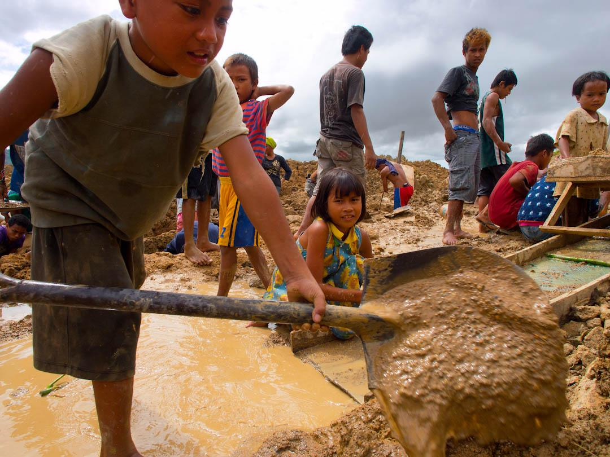
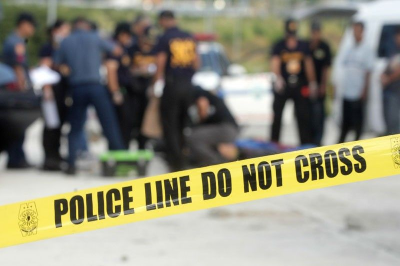
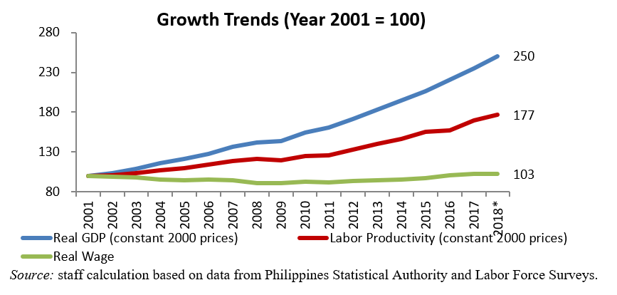

Cause and Effects of Poverty in the Philippines
Inability to afford housing
With poverty rife in the country and job opportunities scarce, many Filipinos are unable to afford housing, putting them at risk of sleeping on the streets. In the Philippines in 2012, extreme poverty affected 19.2 percent of the population, or approximately 18.4 million people. This poverty line survived on $1.25 per day, making it extremely difficult for Filipinos and their families to rise out of poverty and find affordable housing (Borgen Project, 2018).

Malnutrition
Hunger is one of the most severe consequences of poverty in the Philippines. Filipinos are forced to survive on very limited food because they do not have enough money to buy it; even when food supplies are stable, they are most accessible in other areas where people have enough money to buy it. With such unequal income distribution, there is a low demand for food supplies in less developed areas populated by low-income residents. Food quality is also declining — rice used to be the main source of food for Filipinos, but it has now been largely replaced by instant noodles, which are cheaper but less nutritious. As a result, malnutrition has become much more prevalent (Borgen Project, 2018).

Child Labor
With poverty wreaking havoc on Filipinos, parents are frequently unable to earn enough money to support their families, forcing children to be taken out of school to work in hazardous conditions. According to statistics, approximately 3.6 million children aged 5 to 17 work as child laborers in the Philippines. This equates to 15.9 percent of the total population (Borgen Project, 2018).

Crime and Thievery
People often resort to crime and thievery to survive in such difficult circumstances. According to research, one of the most common reasons for stealing is the difficulties brought on by poverty. People who are unemployed resort to stealing, especially since family sizes are large and there are a lot of people to provide for. There are far too many people and far too few resources. In such circumstances, people become desperate and resort to drastic measures in order to provide for themselves and their families (Borgen Project, 2018).

Poor Economic Growth
The poor remain poor because they cannot borrow against future earnings to invest in education, skills, new crops, and entrepreneurial activities; they are cut off from economic activity because many collective goods (such as property rights, public safety, and infrastructure) are under-provided; and they lack market information. Constraints on Investment Capacity Investment is essential for economic growth and for the poor to escape poverty. Low income levels are a major reason why the poor are unable to save enough money to finance productive investments (Effects of Poverty in the Philippines, 2014).

Bad Living Conditions
Many families are forced to occupy public and private lands without the right to do so due to poverty. And, because this isn't their land, it tends to be overcrowded. Because of overcrowding, the environment usually becomes unsanitary, increasing the likelihood of disease spread. Furthermore, their houses are close together/connected to each other, making it easy for fire to spread and making it difficult for fire fighters to extinguish the flames due to the small roads between these houses (Effects of Poverty in the Philippines, 2014).

Articles about the Causes and Effects:
Borgen Project Article
ADB Poverty in the Philippines Article
Go Back